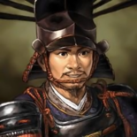
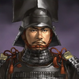

El período Azuchi-Momoyama comenzó al concluir el período Sengoku en Japón y terminó al empezar el período Edo, tras la política de unificación del shogunato Tokugawa. Este período empieza en el 1568 tras la entrada de Nobunaga Oda a Kioto y termina tras la batalla de Sekigahara en el 1600 a manos de Ieyasu Tokugawa con apoyo del clan Toyotomi. El nombre de este período toma el nombre de los castillos principales de Nobunaga Oda (Azuchi) y Hideyoshi Toyotomi (Fushimi-Momoyama).
Los principales protagonitas en este período fueron tres. Nobunaga Oda, Hideyoshi Toyotomi, y finalmente Ieyasu Tokugawa.
| Nombre | Nacimiento | Defunción | Mote o título |
|---|---|---|---|
| Nobunaga Oda | 23 de Junio de 1534 | 21 de Junio de 1582 | Rey Demonio del Sexto Cielo |
| Hideyoshi Toyotomi | 2 de Febrero de 1537 | 18 de Septiembre de 1598 | El Mono (Dado por Nobunaga) |
| Ieyasu Tokugawa | 31 de Enero de 1543 | 1 de Junio de 1616 | Mapache (Dado por Nobunaga) |
Oda Nobunaga, hijo de un daimyō menor de la provincia de Owari, luchó contra otros miembros de su familia por el control del clan a la muerte de su padre, matando a uno de sus hermanos en el proceso. En el año 1560 se enfrentó contra un numeroso ejército (estimado en 40.000 soldados samurái), comandado por Imagawa Yoshimoto, con tan sólo 3.000 soldados durante la batalla de Okehazama. Gracias a un ataque sorpresa salió victorioso, lo que puso a Nobunaga en la cima del poder militar del país.
Hideyoshi Toyotomi, fue un daimio del período Sengoku que unificó Japón. Es conocido por sus invasiones de Corea y por haber dado numerosos legados culturales, incluyendo la restricción de que sólo miembros de la clase samurái podían portar armas. De origen humilde, Hideyoshi se convirtió en uno de los hombres más importantes de la época, y sus reformas políticas efectivamente pacificaron el país y sentaron las bases del shogunato Tokugawa.
Ieyasu Tokugawa, fue el fundador y primer shōgun del shogunato Tokugawa de Japón, quienes gobernaron desde la batalla de Sekigahara, en 1600, hasta la Restauración Meiji en 1868. Ieyasu gobernó desde 1600 (oficialmente 1603) hasta su renuncia en 1605.
Los tres personajes tenían una personalidad y maneras de actuar muy distintas, y de esta manera se demuestra en una fábula en la cual los tres se reunen para hablar de cómo deberían actuar frente a un cuco que no canta.
Nobunaga dice "Si el cuco no canta, matadlo". Hideyoshi dice "Si el cuco no canta, persuadidlo". Finalmente, Ieyasu dice "Si el cuco no canta, esperad".
Documentación: